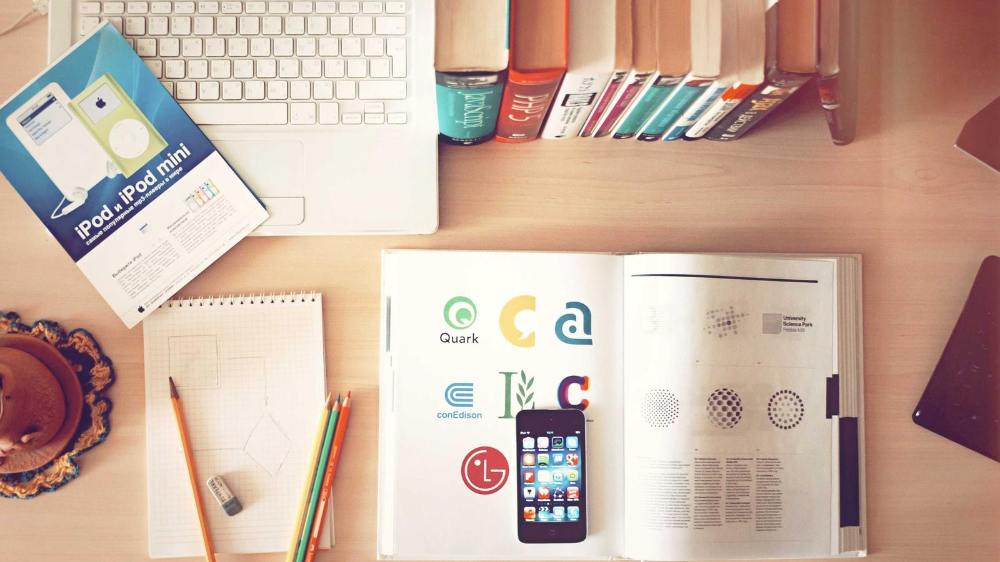

Capital Campaign
DUMMY — this whole page is a placeholder. The live page is empty and I have no campaign details.
What we need from you
DUMMY — the kitchen upgrade, the roof, accessibility, the organ?
DUMMY — how much, and by when.
DUMMY — raised so far, so a progress bar can be shown.
DUMMY — whether pledges are separate from ordinary giving.
DUMMY — the person on Session leading it.